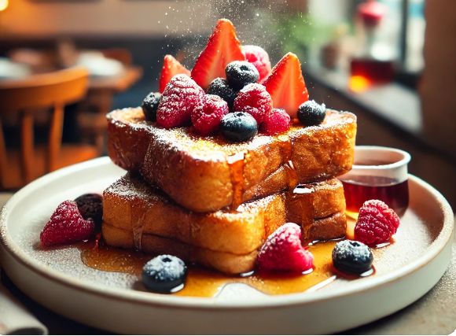

French Toast
French Toast is a classic breakfast dish made by soaking slices of bread in a mixture of beaten eggs, milk, and sometimes cinnamon or vanilla, then frying them until golden brown. The result is a soft, flavorful, and slightly crispy dish that's often served with maple syrup, powdered sugar, fresh fruit, or whipped cream.